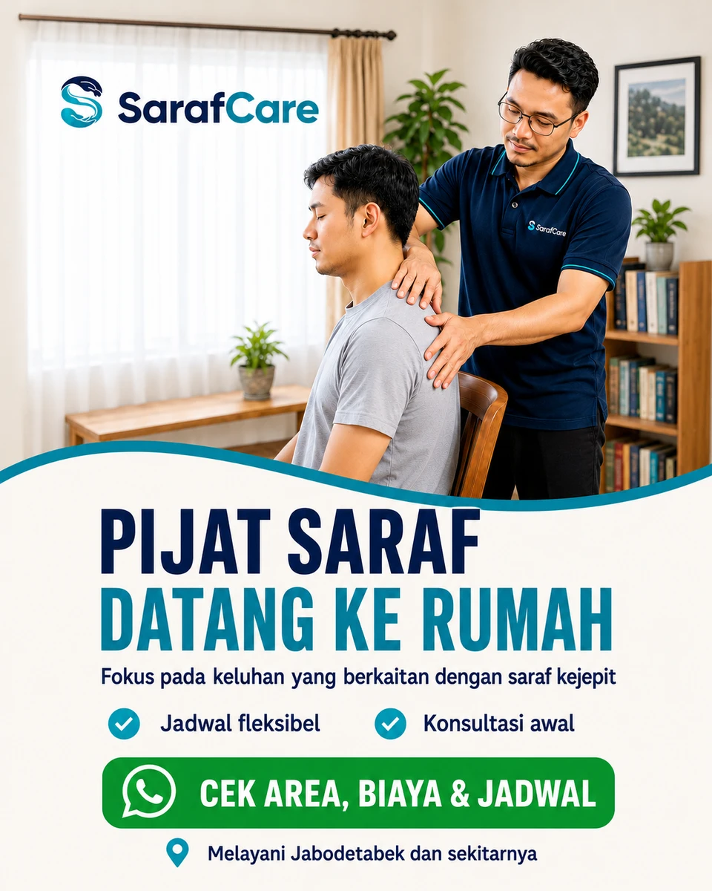

Local relevance
Keep the advertised area connected to where a home visit can be delivered.
From an ad to a conversation—and a service that can be delivered.
A small local-service campaign connecting offer framing, geographic targeting, Meta Ads, and a WhatsApp enquiry journey, with the operational lessons alongside the results.

Historical campaign snapshot reported by the owner. Conversations are a platform metric; revenue is money received, not calculated profit.
SarafCare was an independent marketing experiment for a home-visit service. The project tested whether a locally relevant offer and a direct WhatsApp route could generate real enquiries and paying customers with a small advertising outlay.
My work connected the service proposition, creative and copy, geographic targeting, planned budget, and the conversation that followed the ad.
This is a marketing case study. It does not evaluate or endorse treatment effectiveness or clinical outcomes.
The recorded targeting focused on Jakarta, Cikarang, and the wider Jabodetabek area. Geography mattered because the service had to be delivered at the customer’s home.
The creative made the visit format visible and invited people to check service area, cost, and schedule. WhatsApp was the enquiry channel for resolving those details before a booking.
Keep the advertised area connected to where a home visit can be delivered.
Make the home-visit format and the next information to check explicit.
Let a prospective customer ask about area, cost, and timing before committing.
The available record supports these campaign decisions. It does not document a formal market survey or a controlled comparison of ad variants.
The saved project creative uses a recognisable home setting and a clear SarafCare identity, followed by the service format and a WhatsApp invitation to check area, cost, and timing.
AI helped produce the visual asset. The scene is an advertising illustration, not a record of an actual patient or practitioner. This portfolio presents it as work created for the project; the exact served-ad variant is not established by the available record.
The campaign moved from Meta/Facebook advertising to a WhatsApp conversation, then booking and a home visit. A chat created an opportunity to confirm fit and availability; it was not the same as a completed sale.
The practical constraint surfaced after people responded: some requested evening appointments, while my college schedule limited the times I could handle. The experiment was paused rather than treating more enquiries as success on their own.
| Stage | Decision to resolve |
|---|---|
| See the ad | Does the service format and area match the enquiry? |
| Open WhatsApp | What are the area, cost, and available times? |
| Arrange the visit | Can the service be scheduled and delivered? |
| Paying customer | Did the enquiry lead to a paid service? |
The two paying customers and received revenue show that the experiment went beyond clicks and conversations. They do not establish repeatable performance at a larger budget or isolate the effect of any one creative choice.
| Measure | Recorded result | How to read it |
|---|---|---|
| Prepared budget | Rp220,000 | Planned budget, not the amount spent. |
| Actual spend | About Rp59,000 | Partial campaign spend, reported at roughly Rp59,003–60,000. |
| Reach | 2,434 | Reported platform reach. |
| Impressions | 3,094 | Ad displays, not distinct people. |
| WhatsApp conversations | 64 | Platform conversation count, not 64 confirmed customers. |
| Cost per conversation | About Rp922 | Reported platform figure. |
| Paying customers | 2 | Owner-reported conversions. |
| Received revenue | Rp2,700,000 | Payment received, not profit after costs. |
I framed the offer, worked on copy and visual direction, selected the geographic focus, prepared the budget, and connected Meta Ads to the WhatsApp-led enquiry process.
I also reviewed the response against the ability to handle the resulting appointments. The constraint was not only how cheaply the ad could generate a conversation; it was whether the next stage could be delivered.
The clearest lesson was that a promising acquisition signal can still expose an operational mismatch. The evening requests mattered because the service depended on someone being available to fulfil them.
A future run should begin with a service-area and appointment-capacity decision, then communicate those boundaries in the enquiry journey. This is the next improvement suggested by the experiment, not a change claimed to have been tested already.
The case keeps planned budget separate from spend, conversations separate from customers, and received revenue separate from profit. Those distinctions make the result useful for deciding what to do next.